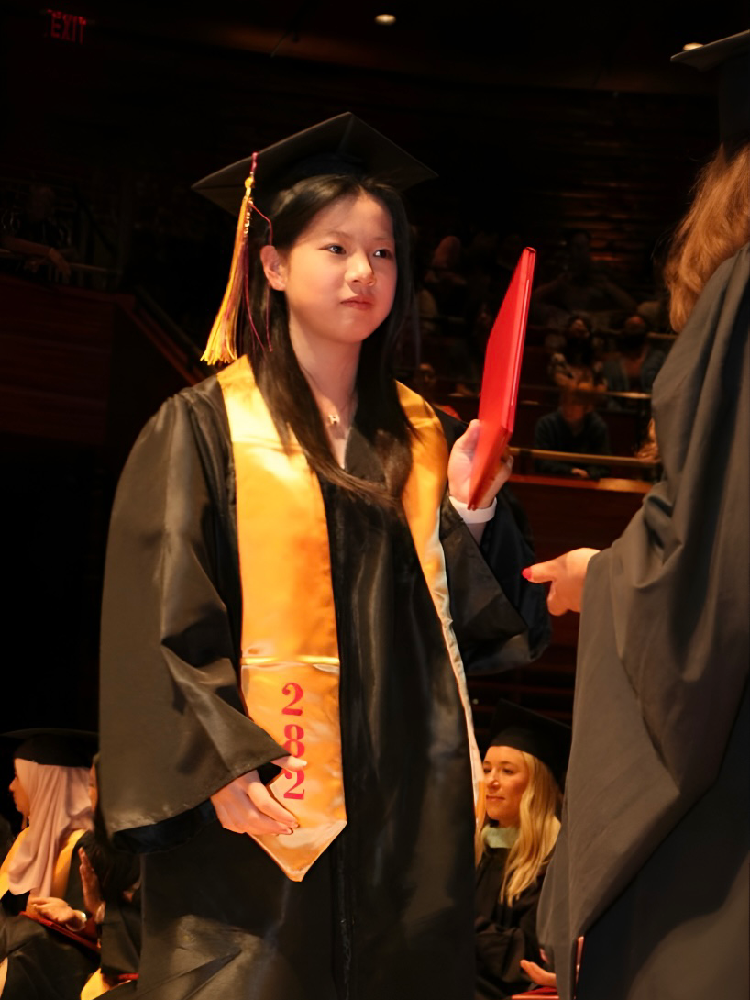

文案收藏
不要因为别人交卷了，就乱写答案。
Move at your own pace, on your own path. Your lane, your race, your pace.
如果你太留恋过去的自己，将永远无法成为你想成为的人。
If you dwell too much on your past self, you'll never become who you want to be.
车到山头必有路，船到桥头自然直。
Where there‘s a will, there’s a way.
性格因人而异即兴发挥。
Different vibes, different styles—just freestyle it.
好事总发生在下一个转弯。
The best surprises always happen at the next turn.
心要像门一样，开合有度 进退自如。
Hold your heart like a door—open, close, and move with ease, as life calls for it.
成年人的世界，只筛选，不教育；只选择，不改变。
As adults, we don't change people—we choose who to keep around.
顺其自然，不必刻意迎合，只求顺从内心。
Flow with life, not approval.
人生注定不圆满，遗憾才是常态。
Life is destined to be imperfect; regrets are its constant companion.
美食清单
音乐收藏（无限循环的那种）
rnb
kpop
cpop
照片墙

高中毕业典礼
摄影师的角度是有点雷，但还是挺好看的。当时穿着高跟鞋脑子里想的全是 “别摔别摔，学士帽别掉” 根本没意识到有镜头。
拍摄日期: 06-12-2023
Santa Monica, CA
加州的海真的很治愈。按下快门的瞬间海鸥photobomb。
拍摄日期: 12-22-2023
Vanderbilt Beach
这张照片是在纽约长岛的时候拍的，海风很舒服。
拍摄日期: 08-10-2024

Blackpink演唱会
演唱会的开场，太激动了。密密麻麻的观众还有点搞笑是怎么回事，每个人都高高的举起手机
拍摄日期: 07-26-2025